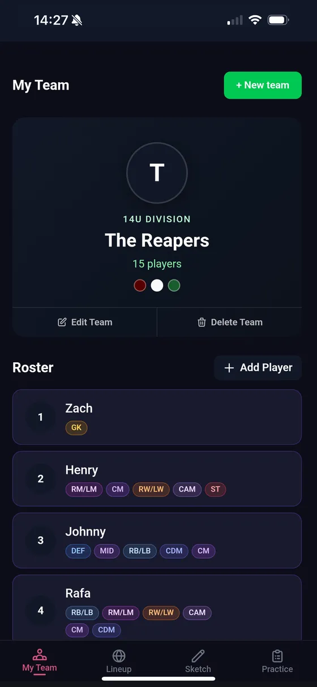
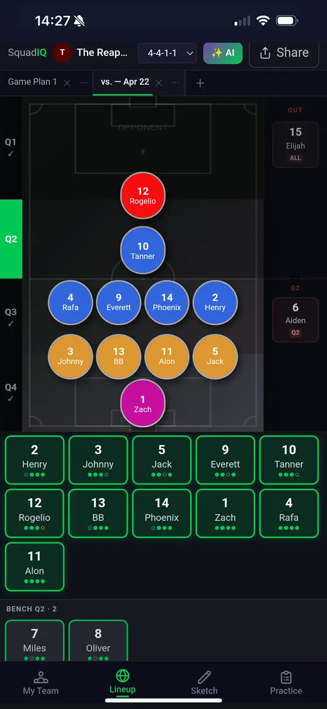
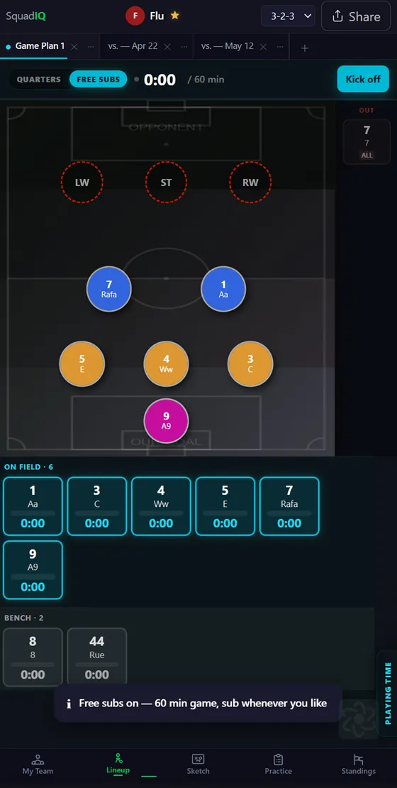
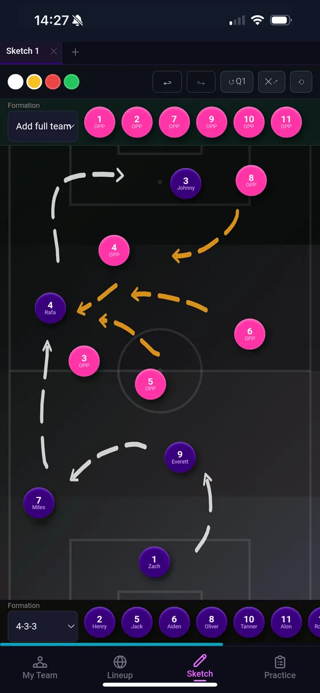
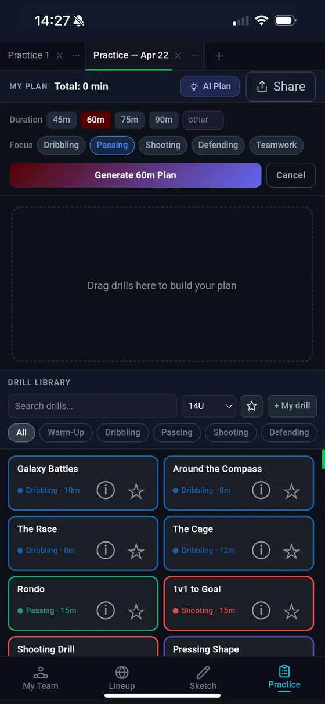
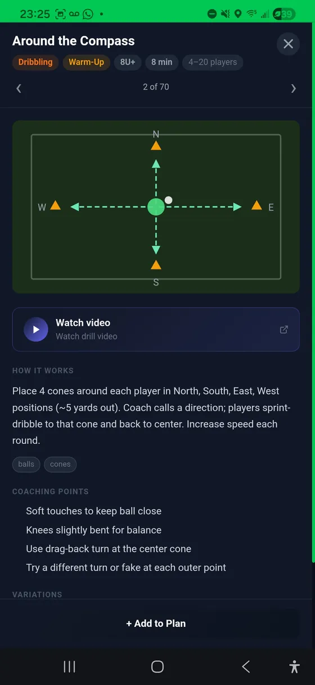

Your roster, finally organized.
All your players, positions, and ratings in one place.
Build a complete profile for every player — jersey number, preferred positions, and per-position skill ratings. Rate strikers, defenders, midfielders, and goalkeepers independently so the rest of the app knows where each kid shines. Run multiple teams from one account with instant switching.
- Add, edit, delete players
- Per-position star ratings
- Multi-team support (up to 4)
- One-tap team switcher

AI does your sub plans.
No more pre-game spreadsheets at 6am.
Pick a formation, mark your available players, and tap one button — the AI Lineup Planner generates a balanced four-quarter lineup using player ratings, position preferences, and the "everybody plays" rule. Goalkeeper rotation handled automatically. Override anything with drag-and-drop.
- One-tap AI Lineup Planner
- Automatic GK rotation
- Equal playing time enforcement
- Drag-and-drop overrides

Nobody rides the bench.
The ¾ rule, checked. Free substitution, tracked.
Most leagues guarantee every kid a share of the game, and the two common shapes of that rule are handled differently. For quarter-based games, SquadIQ warns you while you're still building the lineup. For leagues that substitute whenever they like, Free Subs swaps the quarter tabs for a running clock and counts real minutes per player.
- ¾ rule warnings before kickoff
- Running game clock
- Real minutes per player
- Bench sorted least-played first

Draw plays kids understand.
The tactical board that finally works on mobile.
A fully interactive field with players you can drag, arrows you can draw, and movements you can map. Switch tools mid-play, erase mistakes, undo and redo anything. Save multiple boards with custom names — keep your best plays, formations, and set pieces ready for halftime.
- Drag players, draw arrows
- Erase, undo, redo
- Multiple renameable boards
- Mobile and tablet optimized

71 drills. Smart plans.
Build a structured practice in minutes — or let AI do it.
A curated library of 71 drills covering warm-ups, technique, possession, finishing, defending, and small-sided games. Build practices manually by picking drills and setting durations, or tap AI Practice Plan and get a balanced session generated around the skills you want to focus on.
- 71 age-appropriate drills
- AI Practice Plan generator
- Build & save custom plans
- Step-by-step instructions

Always know where you stand.
Real-time standings, auto-refreshed.
Pulls live standings directly from MatchTrak and TeamSideline so you're never refreshing a clunky league website at halftime. Track multiple divisions in tabs, see your team highlighted, and let the data refresh itself in the background.
- MatchTrak & TeamSideline support
- Auto-refresh every 6 hours
- Multiple division tabs
- Your team highlighted